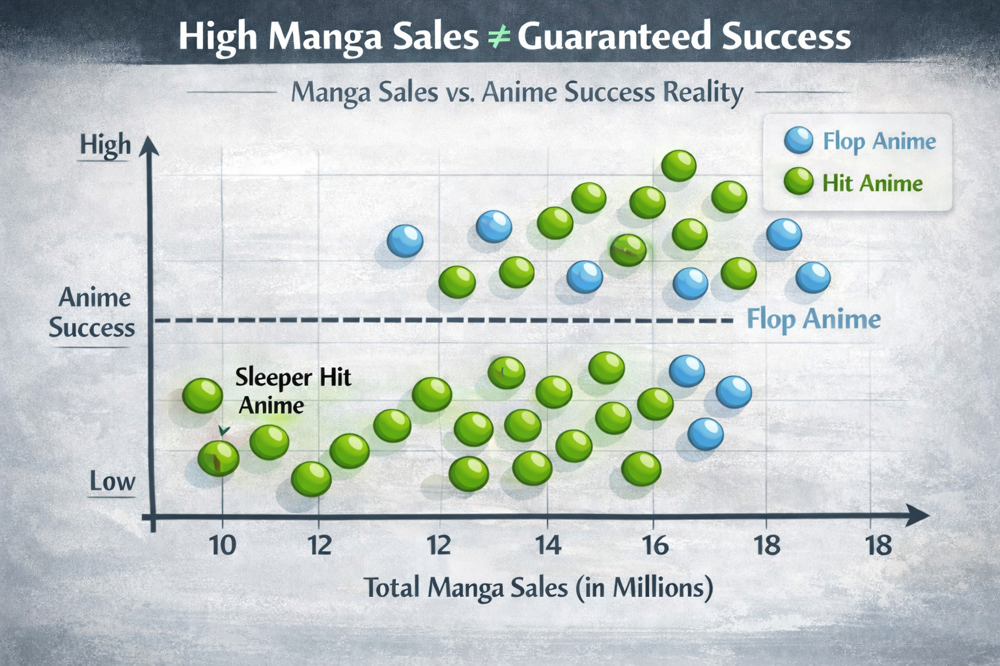

Moneyball for Manga: Can Data Predict the Next Demon Slayer?
By Nishanth Kumarasamy
Introduction: The High Cost of a Missed Hit
Every year, the Japanese animation industry churns out hundreds of new series. For fans, it is a feast of content. For production studios and streaming services, it is a high-stakes casino. A single season of high-quality anime can cost millions of dollars to produce. If it becomes the next global phenomenon like Jujutsu Kaisen or Demon Slayer, the merchandise and licensing revenue is astronomical. But for every hit, there are dozens of shows that vanish into obscurity, failing to recover their production costs.
The industry has traditionally operated on a mix of executive intuition “gut feeling” and raw manga sales figures. The logic seems sound, if a manga sells millions of copies, the anime adaptation should have a built-in audience. But this correlation is becoming increasingly unreliable in the streaming era. We have all seen massive bestsellers result in lackluster anime adaptations that fail to capture viewership (eg. Tokyo Ghoul). Conversely, obscure cult favorites with mediocre sales have suddenly exploded into global dominance upon being animated (eg. Demon Slayer).
As a data scientist (and an anime fan), I began to wonder, Is there a hidden signal in the noise? Can we move beyond simple sales volume and use machine learning to identify the next big hit before a single frame of animation is drawn?
The Problem with “Gut Feeling” and Raw Sales
Traditionally, an acquisitions manager reads manga and decides, based on their experience, what will work on TV. While valuable, this method is inherently prone to personal bias. A producer might greenlight a series because they personally love the art style, ignoring data suggesting the genre is currently oversaturated in the market.
Furthermore, relying solely on manga sales volume is a flawed metric. Sales tell you how many people bought the first volume because of marketing hype or a cool cover. It does not necessarily tell you how they felt about it. Did they read it once and forget it? Or did they become obsessed, buying every subsequent volume and discussing it daily online? Sales data alone cannot distinguish between fleeting interest and deep engagement. But data science can.
Enter the “Digital Scout”
To solve this, we proposing building a Digital Scout, a predictive model that analyzes audience behavior rather than just point-of-sale transactions. By scraping publicly available data from massive aggregation sites like MyAnimeList, Reddit communities, and Twitter trends, we can look at the vital signs of a manga series long before it gets an anime announcement. The goal isn’t to replace the human element of curation, but to arm decision makers with a statistical flashlight in a dark room.
We analyzed historical data of manga that were adapted into anime over the last decade, comparing their pre-adaptation metrics against the eventual success of the anime. The visualization below reveals why relying on sales alone is dangerous.

As Figure 1 demonstrates, high manga sales do not guarantee anime success. There is a distinct cluster of “Risk Traps”, manga that sell well initially due to hype but have dismal retention rates. Adapting these properties often leads to significant viewership drop off mid-season.
Conversely, the model identifies “Sleeper Hits”. These properties have lower total sales volume, making them cheaper to license, but they boast incredible retention rates. These are the properties that create devoted, evangelizing fanbases that drive viral word of mouth growth, the holy grail for streaming platforms looking to reduce subscriber churn.
The Three Key Metrics of Success
Through our analysis, we identified three specific behavioral metrics that correlate more strongly with eventual anime success than raw sales ever did.

1. The Stickiness Factor (Reader Retention) Volume 1 sales measure marketing success but Volume 10 sales measure loyalty. “Retention Rate” is the percentage of readers who start a series and stick with it through later arcs.
However, not all retention is created equal. Our analysis revealed that certain niche genres command much higher loyalty than mainstream ones.

As shown in Figure 3, widely popular genres like Isekai (fantasy portal) are oversaturated. While they might sell many initial copies, readers quickly move on to the next similar title. In contrast, genres like Psychological Thrillers may have smaller total audiences, but nearly every reader finishes the series. For a subscription service, a smaller, intensely loyal audience is often safer than a large, fickle one.
2. Sentiment Analysis: Obsession vs. Approval Using Natural Language Processing (NLP) to analyze thousands of user reviews, we can distinguish between mild approval and fanatic obsession. A series rated 8/10 because it was a pleasant read is very different from a series rated 8/10 because it was emotionally devastating. Our data shows that high-arousal emotion words, even negative ones like “heartbreak” or “frustrated” which are better predictors of engagement than generic praise. Polarizing content often outperforms safe content in the streaming era because it drives conversation.
3. Community Velocity How fast does news travel? “Community Velocity” measures the speed of discussion threads following a new chapter release. If a manga chapter drops and forums explode with 5,000 comments in an hour, the velocity is high, indicating viral potential. High-velocity properties are prime candidates for adaptation because the fanbase will do the marketing for you on social media.
The Risk Score System and Technical Reality
We don’t just hand producers raw data. We feed these metrics into a machine learning model, specifically a Random Forest Classifier to generate a simple “Risk Score” for unadapted manga.
We chose a Random Forest approach over simpler models like Logistic Regression because the relationship between these metrics is rarely linear. For example, high negative sentiment might kill a romance series, but it might actually propel a dark thriller to viral status. The Random Forest model can learn these complex, genre-specific nuances.
However, no model is magic. Analyzing our “False Positives” cases where the model predicted a hit, but the anime flopped have taught us a crucial lesson, that execution matters. The model can identify a winning script (the manga), but it cannot predict if a studio will rush the animation production or cut the budget. The data validates the IP’s potential, but the final product’s quality remains a human variable.
Conclusion: Smarter Greenlighting
In an industry where one failure can bankrupt a smaller studio, using data to filter projects is no longer a luxury rather it is a necessity.
By listening to behavioral data rather than just sales figures, studios can move away from chasing expensive, over-hyped properties that may already have peaked. The “Digital Scout” allows them to take calculated risks on unique, high-retention stories that are currently undervalued by the market. The next global anime phenomenon is out there, sitting quietly on a bookshelf. We just need to use the right lens to find it.